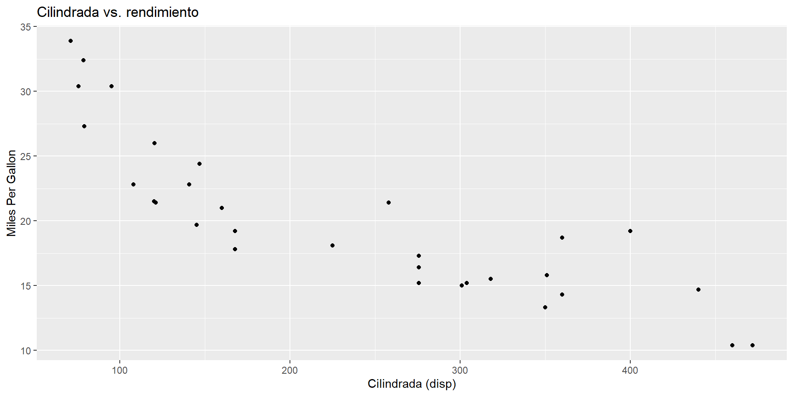

Introducción a R Markdown y reproducibilidad
Clase 1
Reproducibilidad y comunicación de resultados
Objetivo: comprender qué es R Markdown y cómo genera informes reproducibles .
Flujo: R / RStudio → .Rmd → Knit → HTML / PDF / Word.
Idea fuerza: un informe reproducible combina narrativa, código y resultados en un solo documento.
Abrir con el porqué: reproducibilidad como requisito mínimo para confiar en resultados y poder mantener proyectos en equipo.
Reproducibilidad vs. Replicabilidad
Reproducibilidad : mismos resultados con los mismos datos y el mismo código .Replicabilidad : resultados consistentes con datos o métodos alternativos .Meta práctica: que cualquier persona (incluido tu “yo futuro”) pueda volver a correr el análisis y obtener lo mismo.
“La reproducibilidad precede a la replicabilidad porque es el requisito mínimo para confiar en un resultado.” — Xiao‑Li Meng (2020)
Usar ejemplo simple: script y datos en carpeta del proyecto. Recalcar que reproducibilidad = volver a obtener el mismo output desde cero.
Ciencia abierta y transparencia
Documentar qué hiciste , con qué datos y con qué versiones (paquetes/entorno).
Compartir: código, datos (cuando sea posible), supuestos y decisiones.
Beneficios: confianza , colaboración , mantenimiento y transferencia .
Principios FAIR en datos: Findable, Accessible, Interoperable, Reusable — Wilkinson et al. (2016) .
Idea clave: documentar el proceso analítico es tan importante como los resultados.
Un guiño a FAIR sin profundizar: lo veremos cuando hablemos de organización de carpetas y metadatos.
¿Qué es R Markdown?
Formato que integra texto + código + resultados en un solo archivo .Rmd.
Al “knittear ”, el documento ejecuta el código y rinde el informe.
Ideal para informes, reportes técnicos, bitácoras y docencia.
“R Markdown operacionaliza la programación literaria : análisis y explicación viajan juntos.” — Xie, Allaire & Grolemund (2019)
Flujo de trabajo
Crear un proyecto en RStudio y un archivo .Rmd
Escribir YAML , texto en Markdown y chunks de código.
Presionar Knit → se ejecuta todo en una sesión limpia .
Consejo : establece semillas cuando uses aleatoriedad (set.seed(123)) y evita depender de objetos creados “a mano” en la sesión.
Anatomía de un .Rmd
YAML (cabecera): metadatos y formato de salida.Markdown : títulos, listas, énfasis, tablas.Chunks de código: bloques ejecutables con opciones que controlan visibilidad y salida.
YAML mínimo
title : "Mi primer informe" author : "Nombre Apellido" date : "2025-11-09" output : html_document : toc : true number_sections : true Notas : toc agrega tabla de contenidos; number_sections enumera los niveles.
¿Qué es un chunk ?
Bloque de código que se ejecuta al “knittear”.
Sintaxis: ```{r nombre, echo=TRUE, message=FALSE, warning=FALSE}
Controla qué se muestra: código , mensajes , advertencias y resultados .
Atajos útiles :
El botón Knit
Ejecuta todo el documento en una sesión limpia .
Si falla: revisa paquetes , rutas y opciones de chunk .
Salida: HTML (recomendado), PDF (requiere LaTeX), Word .
Tip: compilar “en limpio” revela dependencias ocultas y favorece la trazabilidad del análisis.
Buenas prácticas
Estructura de carpetas: data/, scripts/, outputs/, docs/.
Rutas relativas + proyectos de RStudio (.Rproj); evita rutas absolutas.Entornos: renv::init() y renv::snapshot() para congelar versiones .
Pro‑tip : agrega un chunk setup con:
knitr::opts_chunk$set(echo = TRUE, message = FALSE, warning = FALSE)
R Markdown vs. Quarto (breve)
Enfoque
Centrado en R
Multilenguaje (R/Python/Julia/JS)
Proyectos
Añade paquetes según formato
Unifica (docs, webs, presentaciones)
Uso típico
Informes rápidos en RStudio
Sitios, presentaciones, libros, pipelines
Regla práctica : .Rmd para empezar rápido; Quarto cuando quieres escalar o mezclar lenguajes.
Mini ejemplo (visual)
title : "Mi informe" output : html_document Texto de prueba.
# gráfico (visual) ggplot (mtcars, aes (disp, mpg)) + geom_point () + labs (title = "Cilindrada vs. rendimiento" , x = "Cilindrada (disp)" , y = "Miles Per Gallon" )

Cierre
Reproducir ≠ Repetir .Documentar es compartir conocimiento .
Ahora, abrimos el .Rmd de clase y probamos Knit .